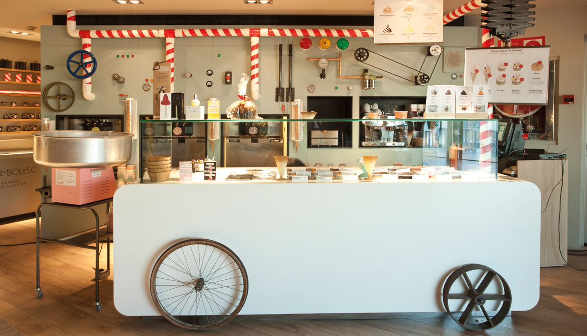

Un referentes de la gastronomía mundial donde el chef Jordi Roca trabaja para mejorar. Con tres estrellas michelin es uno de los restaurantes que más tienes que esperar para sentarse en sus mesas con el tiempo estimado de un año.
El Repostero, está acompañado de sus dos hermanos. Joan, El Cocinero. Josep, el Maitre.
Un referentes de la gastronomía mundial donde el chef Jordi Roca trabaja para mejorar. Junto a su restaurante, es uno de los lugares más visitados por los adictos al chocolate. Ya que hay una gran variedad de ellos traídos de los lugares más extraños que te puedas imaginar.
Rocambolesc ya está abierto en diversos puntos de la geografía española, junto a Madrid y Barcelona, hay un Rocambolesc de nueva apertura en Alicante.
